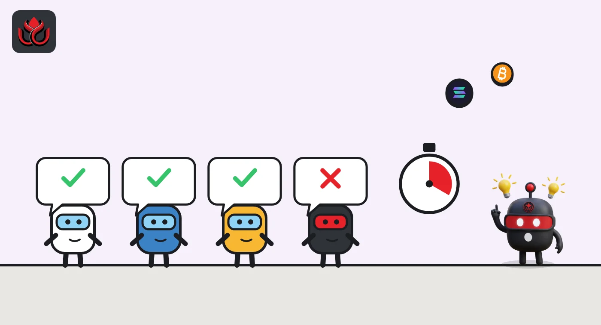
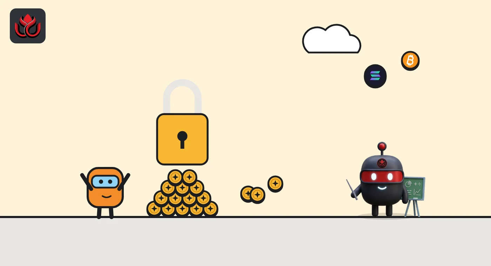

What is the XRP Ledger? How XRP works with no mining, and what Ripple holds
The XRP Ledger has run since 2012 and settles a new ledger every 4 to 6 seconds without mining. XRP is its coin, Ripple is a company that does not own it but reported holding 37.66 billion XRP at midyear, and RLUSD is Ripple's stablecoin on it.
Key points
- The XRP Ledger is a layer-1 blockchain running since 2012. Validators agree on a new ledger every 4 to 6 seconds using trusted lists called UNLs, with no mining.
- Every account must lock a 1 XRP base reserve, plus 0.2 XRP for each object it owns, such as a trust line or offer. A standard transaction burns 0.00001 XRP.
- Ripple received 80 billion XRP in 2012 and reported holding 37.66 billion as of June 30, 2026, of which 32.6 billion was in escrow.
 What DeepSea's data shows
What DeepSea's data shows
XRP is one of the most traded assets among the leveraged wallets DeepSea follows. Its long/short page showed $96.76 million of XRP longs against $13.22 million of shorts on November 2, although net positioning fell by $19.52 million, the fourth-largest drop on the page.
DeepSea also tracks this fall's D'CENT drain. Its hack page says about 11.7 million XRP left thousands of wallets made in the D'CENT app between September 15 and 20, and values the drain at about $20 million. Other on-chain counts differ, as our story on the drain explains. The transfers were signed with the victims' own keys, so DeepSea describes it as a wallet-side key compromise, not a flaw in the XRP Ledger.

Data: DeepSea (desea.io), checked November 2, 2026, 1:01 p.m. ET.
What is the XRP Ledger?
The XRP Ledger (XRPL) is a public blockchain that records payments and other transactions, and it uses its own coin, XRP, to do so, xrpl.org says. It is a layer 1, meaning it runs its own network rather than sitting on top of another chain. The software is open source, and anyone can run a server.
Jed McCaleb, Arthur Britto and David Schwartz built the ledger over 2011 and early 2012, according to the XRPL documentation. It has run since 2012. Its main features, such as a built-in exchange, tokens and an automated market maker, are part of the protocol itself rather than apps written as smart contracts.
As of November 2, 2026, XRP traded at about $1.24, with a market cap of about $78.8 billion, ranking fifth on CoinGecko. About 63.35 billion XRP was in circulation out of a 100 billion maximum.
How does XRP Ledger consensus work?
The XRPL does not use proof of work (mining) or proof of stake. Instead, some servers act as validators. They gather new transactions into a proposed ledger and vote on it in rounds, adjusting toward the validators they trust until they agree. When 80% of validators agree on a set of transactions, a new ledger version is created. That process takes 4 to 6 seconds, xrpl.org says. Once validated, a ledger is final.
Each server chooses its own Unique Node List (UNL): the validators it trusts not to collude. The consensus docs set out the safety math. The network keeps going while fewer than 20% of trusted validators are faulty. Confirming an invalid transaction would take more than 80% of them colluding. If 20% to 80% are faulty, the network stops making progress rather than accepting bad data.
That trade-off matters. The XRPL favors halting over forking, and its security depends on which validators sit on the lists most servers use.

What is XRP used for?
XRP pays transaction costs, helps protect the ledger from spam and can act as a bridge between currencies on the ledger's built-in exchange, Ripple says. The standard cost of a transaction is 0.00001 XRP, or 10 drops, and that XRP is destroyed rather than paid to anyone, per the XRPL learning portal. A drop is the smallest unit of XRP. Because fees are burned, the total supply slowly falls.
All XRP was created at the start: 100 billion of it, xrpl.org says. CoinGecko lists the total supply at about 99.99 billion as of November 2, 2026.
What are XRP Ledger reserves?
To stop the ledger from filling up with junk, every account must hold a minimum amount of XRP that it cannot spend. On mainnet the base reserve is 1 XRP, and the owner reserve is 0.2 XRP for each object an account owns, such as a trust line, an open offer or an escrow, per the reserves page. An account with five trust lines must therefore keep 2 XRP locked.
Validators can change these numbers through fee voting. The last cut took effect on December 2, 2024, when the base reserve fell from 10 XRP to 1 XRP and the owner reserve from 2 XRP to 0.2 XRP, xrpl.org announced.

How does the XRP Ledger AMM work?
The XRPL has had a decentralized exchange with order books for years. In 2024 it added an automated market maker (AMM): pools of two assets that price trades by formula. The AMM went live on mainnet on March 22, 2024, xrpl.org said, and days later a community member found some pools did not behave as intended in complex payment paths. Users were told to withdraw rather than add funds until a fix amendment passed.
The design, per the AMM docs:
- Only one pool can exist for each pair of assets, and at most one side can be XRP.
- Depositors receive LP tokens for their share and can vote on the trading fee, which ranges from 0% to 1%.
- An auction slot lets one account pay LP tokens for 24 hours of trading at a tenth of the normal fee.
- Payments can fill against the order book, the pool or both, whichever price is better.
What is Ripple's relationship with XRP and RLUSD?
Ripple is a company. The XRP Ledger is a network that Ripple does not own. In September 2012, Jed McCaleb, Arthur Britto and Chris Larsen formed the company, then called OpenCoin, and decided to give it 80 billion XRP in exchange for building on the ledger, the XRPL docs say. In 2017 Ripple put 55 billion XRP into escrow, so the amount it can release grows on a schedule.
Ripple calls itself one of many developers on the ledger and a holder of XRP. As of June 30, 2026, it reported holding 37.66 billion XRP, of which 32.6 billion was in escrow, its XRP page shows.
RLUSD is Ripple's US dollar stablecoin, issued on the XRP Ledger and Ethereum by Standard Custody & Trust Company, Ripple's New York-regulated trust company. On October 26, 2026, Ripple said the Office of the Comptroller of the Currency (OCC) had given final approval to charter Ripple National Trust Bank. Once open, the bank will manage RLUSD's segregated reserves and act as their collateral trustee for holders. We covered that in RLUSD's big week.
Where the 100 billion XRP sat, June 30, 2026
billion XRP
Source: Ripple, XRP page (figures as of June 30, 2026)
What are the risks?
- Validator concentration: safety depends on the trusted lists most servers use. If enough listed validators failed together, the ledger would halt.
- Company exposure: Ripple still holds a large share of supply, and its releases from escrow can add to circulating XRP.
- Wallet and key risk: the protocol cannot help if your keys leak. Thousands of software wallets made with D'CENT's app were emptied this fall, as we reported in our story on the drain.
- New features: the AMM's early flaw shows protocol additions can carry bugs even after validators approve them.
- Price swings: XRP's market value moves sharply, like any crypto asset.
LC Insight analysis
This section is our reading of the facts above, not a statement of fact.
- We think the UNL model is the part most newcomers miss. It buys fast finality and a ledger that halts rather than forks, but it makes the choice of trusted validators the real security question.
- Ripple's holdings still shape supply. With about 37.66 billion XRP reported held at midyear, escrow releases and company sales sit alongside any payment demand.
- RLUSD gives the ledger a regulated dollar of its own. The likely result is that stablecoin activity, not XRP transfers alone, becomes a bigger share of what the network does.
What's next
- New amendments voted in by validators, including any change to reserves or fees
- Ripple's escrow and holdings figures in its next update
- RLUSD growth on the XRP Ledger versus Ethereum once Ripple's trust bank opens
Frequently asked questions
Is XRP the same as Ripple?
No. XRP is the native coin of the XRP Ledger. Ripple is a company that holds XRP and builds products that use it and RLUSD.
Is XRP mined?
No. All 100 billion XRP were created when the ledger started, and validators agree on ledgers without mining.
How much XRP do I need to open an account?
On mainnet the base reserve is 1 XRP, plus 0.2 XRP for each object the account owns, such as a trust line or offer.
How fast is the XRP Ledger?
According to xrpl.org, its consensus process takes 4 to 6 seconds, after which a ledger is final.
Are XRP fees burned?
Yes. The standard transaction cost of 0.00001 XRP is destroyed rather than paid to validators.
Disclaimer. This article is based on public information and the sources listed below as of the update time shown. It is for information only and is not investment, legal or tax advice. Figures may change as companies and authorities publish new data.
Sources
- XRPL.org, What is XRP?
- XRPL.org, What is the XRP Ledger?
- XRPL.org, Consensus Protocol
- XRPL.org, Reserves; Lower Reserves Are In Effect (December 2024)
- XRPL.org, Automated Market Makers; AMM Status Update (March 26, 2024)
- Ripple, XRP page (holdings as of June 30, 2026)
- CoinGecko, XRP (checked November 2, 2026)